让平凡人的创业梦，从中国支付人开始。2019年6月25日“中国支付人特训第一期”培训会在广州市天河区东圃创境汇盈科智谷〔创新产业中心〕”拉开了帷幕。会议持续了三天。来自全国各地的支付人精英参加了此次培训。
此次培训会旨在于提升支付人精英的专业技能，使参会者在了解及认同3.0支付人— 创新商业模式的基础上，更专业地帮助支付人团队开拓当地市场。
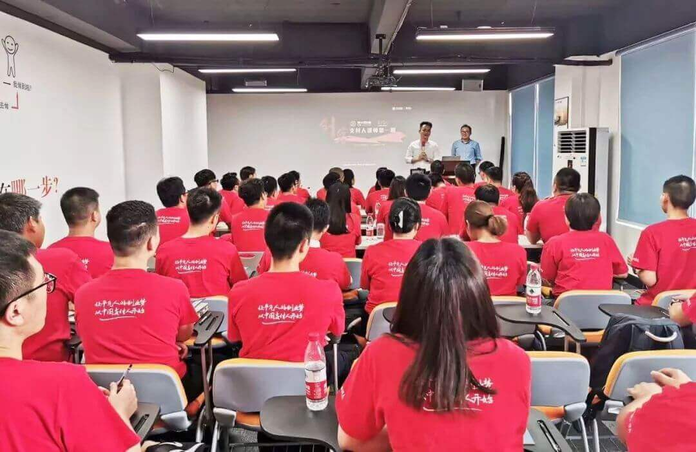6月25日早上9点30分，会议正式开始。支付人董事长兼总裁 李鹏辉先生 亲临现场作开场致辞，他说到：支付人3.0 — 创新商业模式，让平凡人的创业梦，从中国支付人开始！在最平凡的生活里，只要你坚持努力，全力以赴。总有一天，你会站在最亮的地方，活成自己曾经渴望的模样，遇见更好的自己！会议现场座无虚席，热情不断高涨，响起了雷鸣般的掌声！
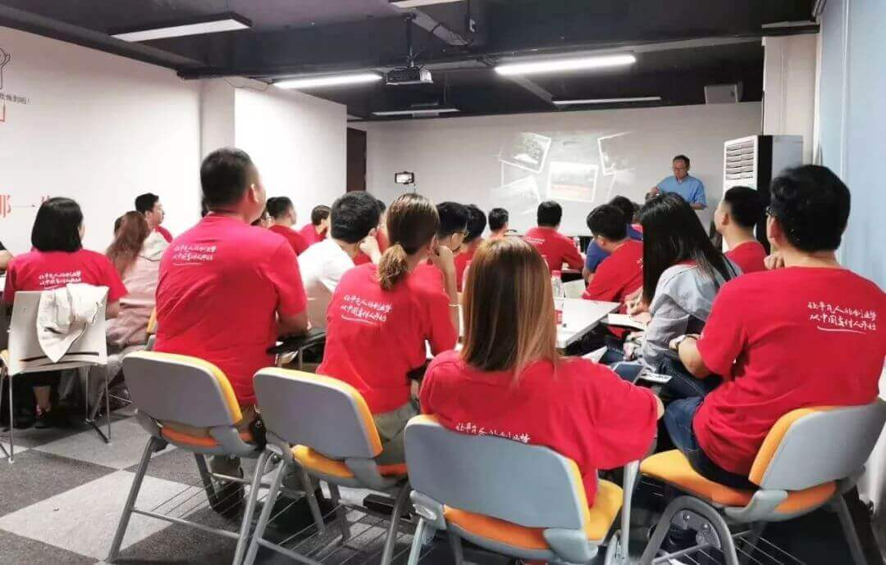这次培训会，由 支付人培训总监 宋秉源老师 主讲，宋老师进行现场指导，不仅可以提高各位支付人的收单能力，更重要的是可以给他们提供了一次极好的学习提升的机会。
第一天的培训中宋老师说到了：一，痛点、痒点、兴奋点；二，控场能力，互动沟通；三，设计成交环节。那么如何挖掘一个事件的痛点、痒点、兴奋点呢？关键在于换位思考。比如我们要如何组织好一场招商会呢？相对应的我们是否要先设定好合适的参会人群，确定好演讲的主题，并且要锁定好成交份额呢？只有相对应地想好每一层，才能更好的完成自己最初的设定。
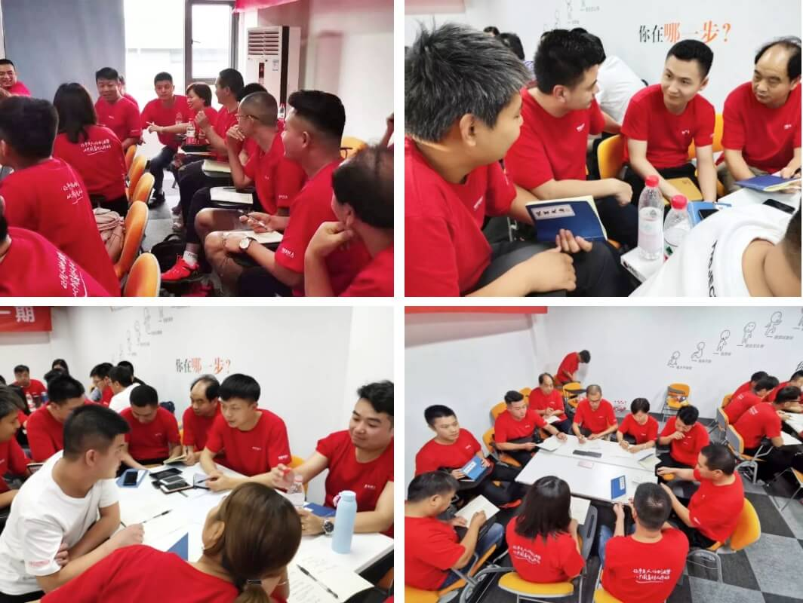活学活用，听了宋老师的培训后，大家自行组队后在热烈地讨论如何展业，如何能取得更大的成功，为自己的团队争光。学习了一天，满满的干货。
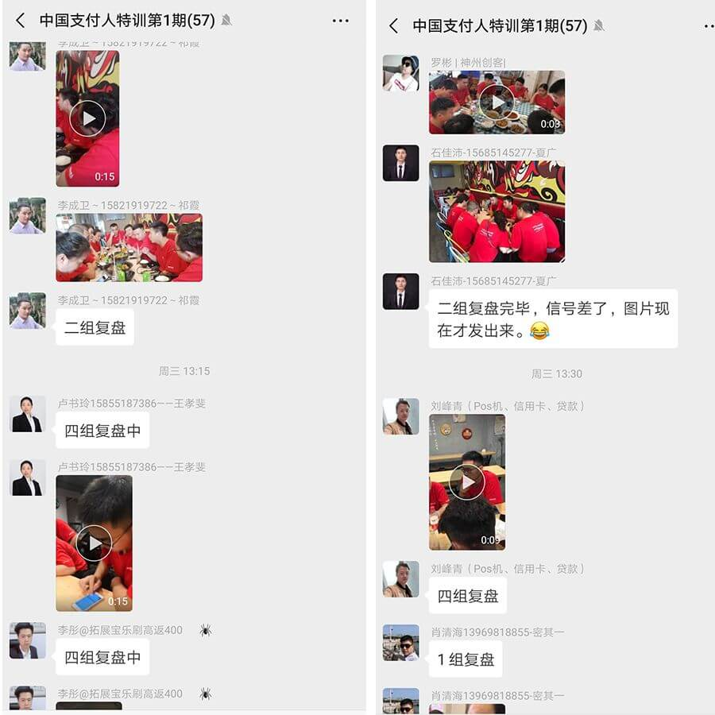晚上复盘：从早上一直培训到晚上十点多，他们仍然能坚持复盘到2点，这是一群朝气蓬勃的追梦人，他们来自五湖四海，共聚中国支付人特训营，只为那句：让平凡人的创业梦，从中国支付人开始！有些路，我们终究要学会一个人去走！未来的你会感谢自己今天的付出。
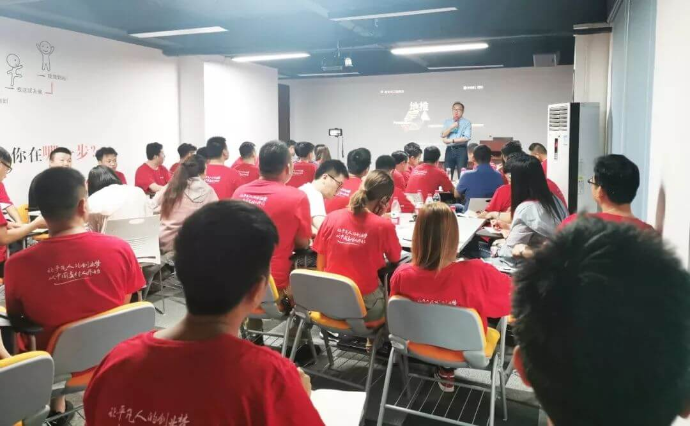晚上复盘到两点，第二天仍然能准时参加培训，为努力的中国支付人点赞。今天的培训宋老师说到了：业绩治百病，地推得天下。是的，通过阿里巴巴公司2008年的纪录片，回到了2000年的阿里巴巴公司，那时候的阿里公司的地推方式是一群人过着打地铺，睡草席，早出晚归的日子，被陌生人拒绝，遭受无数人的冷言嘲讽，外出谈合作只能走路或者搭公交，不停地在工业区来回奔走，走上几公里，甚至要等待几个小时，只为了几分钟见面，是的，那是阿里集团的第一批铁军，然而在坐的各位，也将是“中国支付人”的第一批铁军。我们的未来充满挑战，也充满机遇。
选择权在于自己：想站在台下仰望别人，还是想别人仰望你？全靠你自己的选择。
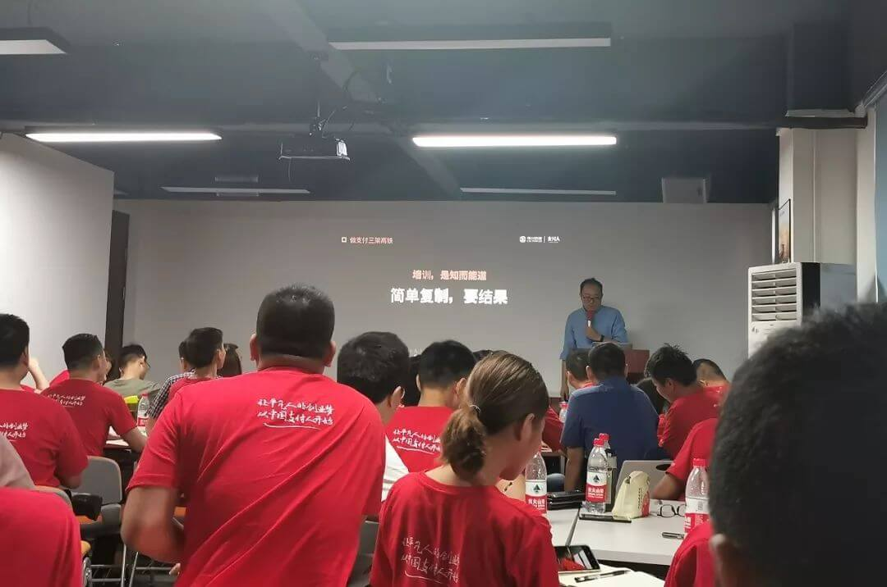宋老师说过：培训，是知而能道。知道并不代表你能做到，做到并不代表你能做好，做好并不代表你能超完美的做到位。许多事情是你自己要去做，做到了得到结果，这时候别人才是真正相信你；自己没去做，只让别人去做，想躺着赚钱，这是忽悠，这是不能持续发展的。舍得舍得，有舍才有得。你愿意舍掉一部分，才能得到更大的一部分。
“圈粉为主，划地为王”。你的地盘，你要扎根，因为你做不到的话，别人会做到的。你是想先知先觉地当经营者，还是后知后觉地当跟随者，亦或是不知不觉的消费者呢？
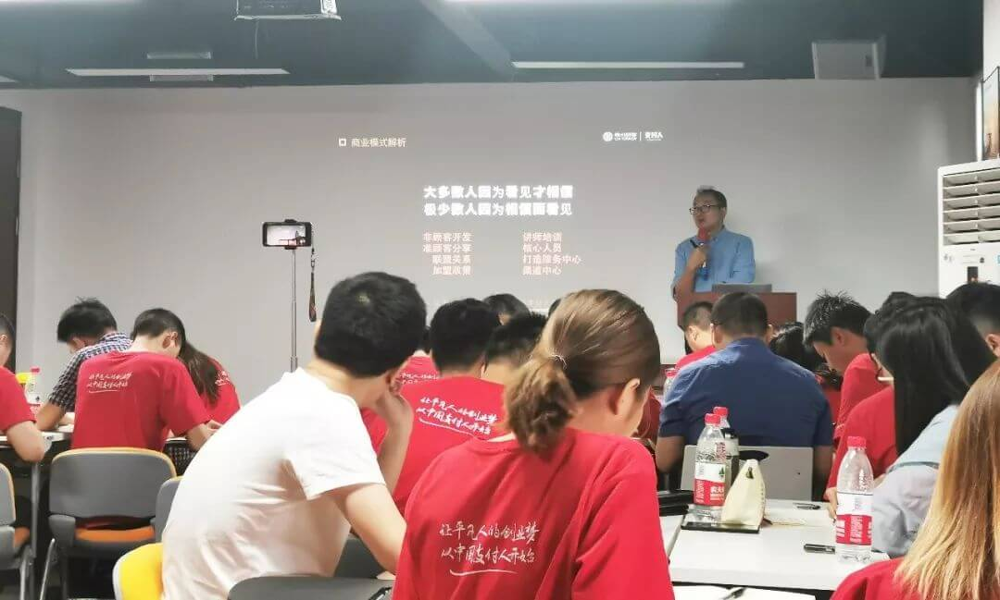宋老师还讲述了非客户开发、如果打造自己的团队，领导力的五个层次，支付的路剩者为王等精彩内容。
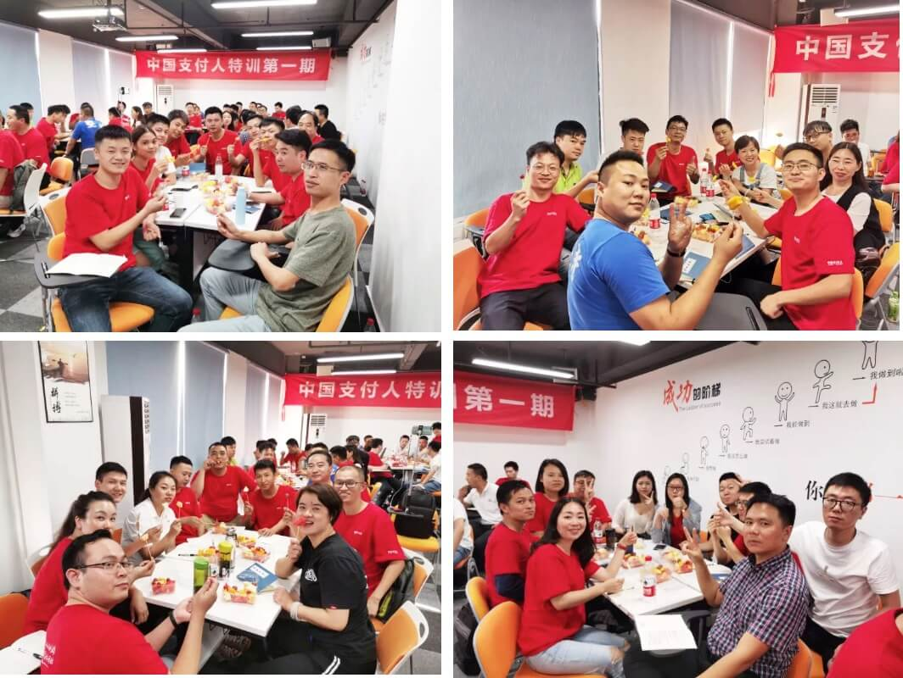在炎热的六月下午里，我们迎来了欢乐的水果下午茶！感谢 支付人董事长兼总裁 李鹏辉先生 的特别安排，同时今天也迎来了我们支付人“杨威”的生日。大家为他一起庆祝，唱生日歌，我想，这一定是我们支付人“杨威”的一次特别生日回忆。
“好，很好，非常好”，随着一阵阵嘹亮的声音的传来，我们的第三天特训正式开始了。我们宋老师今天给大家首先说到的是：熟人文化，圈子文化，社群文化，归根到底这也是圈子文化，比如我们的支付圈。那我们如果为我们的事业引流呢？我们可以让店内的人跑到店外，跟一堆人发生关系，然后把他们拉到店内，这是一种引流方式。我们也可以把店内的资源导出去，再次变现实现价值的延伸，比如线上。
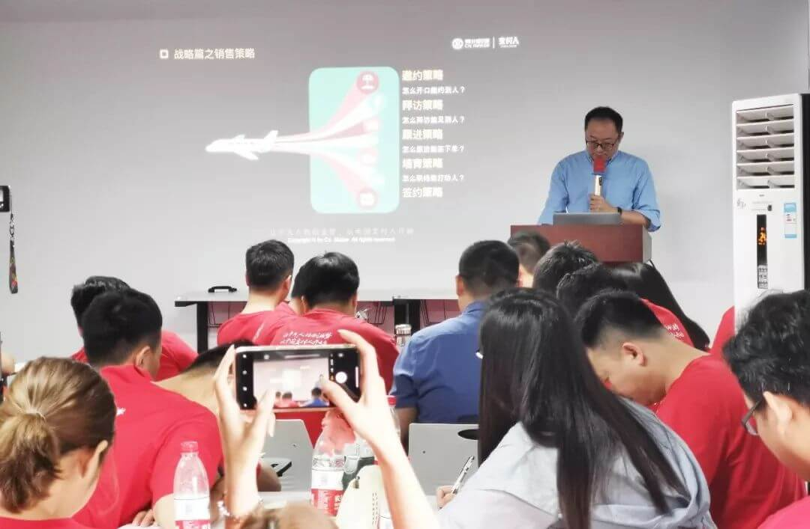宋老师还说到了：销售基本功，其实考的也是销售的“情商”，情商高自然你的追随者就会多；销售基本功其实也包括套路，但是如果你的套路让人舒服，让人心悦诚服了，那就是成功的套路。恰当的时间，恰当的时机才能说恰当的话。比如你对着你的家人说“我爱你”，家人会非常的开心，但是你对着一个陌生人说“我爱你”，那结果必定是不一样的。
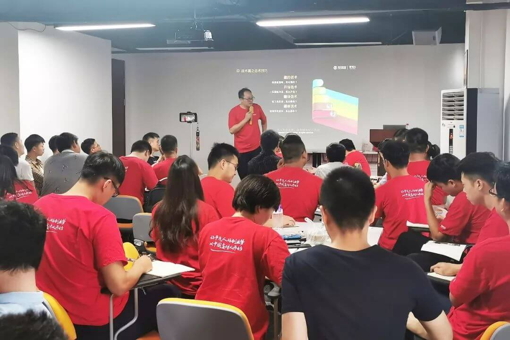战术篇之话术技巧：邀约技术。为什么你的邀约老是被拒绝呢？别人不喝酒，你邀请别人喝酒；别人不喜欢吸烟，你邀请别人一起去吸烟；这时候就要考虑自己的话术是否出现问题了，被拒绝是否你只邀约过一次呢？要知道重复才会产生机会，这也是需要考虑到的问题。
不仅仅于此，今天宋老师还讲述了战术篇之销售工具：好记性不如烂笔头；多点思考（多看书）；战术篇之基础表达；逼单技术 等精彩内容。
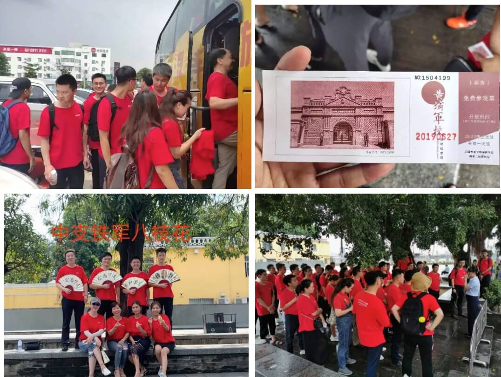美好的时光总是会过得飞快的，马上，我们就要结束为期三天的特训了，在27号下午，支付人董事长兼总裁 李鹏辉先生 特意为大家安排了 广州黄埔军校的参观。大家在黄埔军校拍下了许多具有纪念价值的照片。
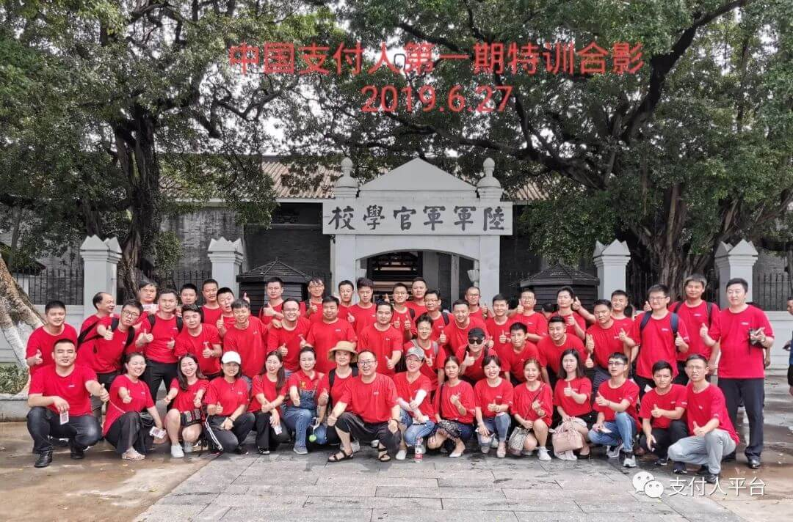大家在黄埔军校参观，缅怀革命先烈并拍下了大合照。
参观完黄埔军校后，我们的军魂也在逐渐形成了！致敬中国支付人！支付人也将会是另外一个黄埔军校，会培养无数革命支付人在全国遍地开花。
至此，中国支付人特训第一期的学员们圆满毕业。感谢 支付人董事长兼总裁 李鹏辉先生 提供这么好的平台给我们，感谢宋老师三天辛苦的付出，让我们收获满满。让平凡人的创业梦，从中国支付人开始，2019大干300亿！